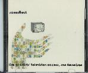

live at the artists' television access, san francisco  live at artists' television access, san francisco. sound test. cd. sp014. purchase. recorded july 28, 2005 at san francisco's ata. limited press.
1 2
back to discography